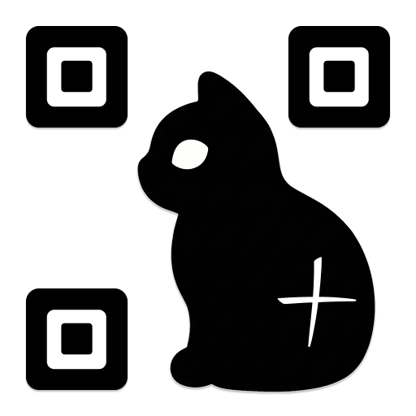

Scan a selected area
Drag over a selected area when you only want QRSpell to read part of the Mac screen.

QRSpellScan QR codes wherever they appear on your Mac screen and get instant results without reaching for your phone.
macOS 15 or later · Apple silicon Mac
Trigger QRSpell from the menu bar or with a custom keyboard shortcut, then scan a selected area or the full screen.
Drag over a selected area when you only want QRSpell to read part of the Mac screen.
Let QRSpell check the full screen when you do not need to draw a selection.
QRSpell can detect multiple QR codes at once and show the available scan results together.

Customize your keyboard shortcut, scan behavior, result handling, and notifications from one settings menu.


Choose popup results when you want to review detected QR code values, or keep your flow quiet with notification or clipboard-only behavior.
Review recent scans from the menu bar, or open the full scan history window to search, filter, delete, and clear records when you need more control.

Offline QR detection runs on your Mac. QRSpell does not include analytics, advertising, tracking, telemetry, or server uploads for scan content.
One-time purchase · No subscription
macOS 15 or later · Apple silicon Mac